合并图的应用
目标
掌握 Analysis 合并图表方式
一、合并图表
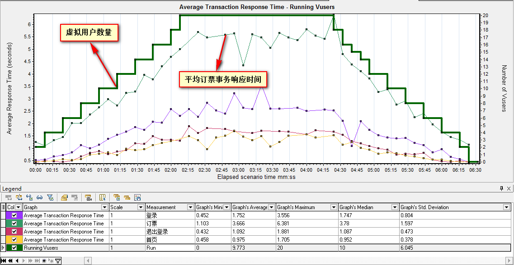
合并图表是为了更好的定位系统瓶颈，比如把虚拟用户运行图和平均响应事务时间合并，能直观体现虚拟用户数量对服务器处理事务产生的影响
案例
使用订票脚本，设计个场景，场景需求设置：
设置：
1). 虚拟用户数20；
2). 场景模式 + 基本计划
3). 虚拟用户启动15秒启动2个，结束与启动相同；
4). 持续时间为2分钟。
二、Analysis合并图
- Running Vusers(虚拟运行用户)
- Average Transaction Response Time(平均事务响应时间)
在合并之前，我们先拿两张图来演示
1). Running Vusers(虚拟运行用户)
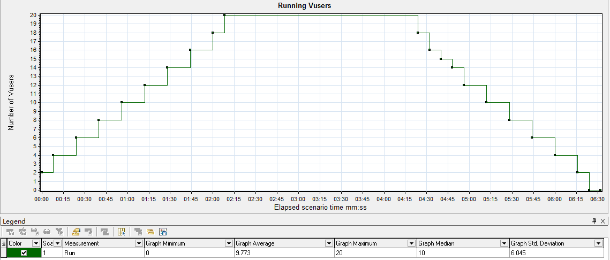
2). Average Transaction Response Time(平均事务响应时间)
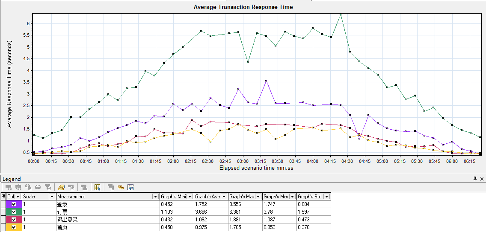
2.1 合并图操作说明
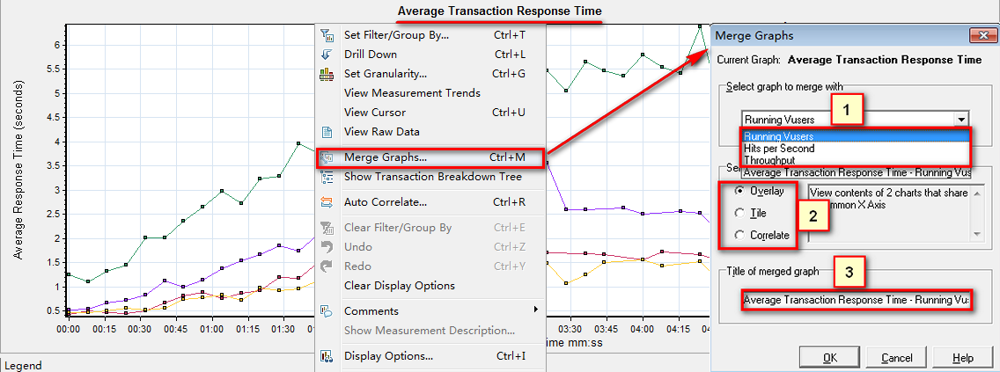
操作说明：
1). 打开合并选项菜单 (Ctrl + M 或者 在要合并的图表上点击鼠标右键 -> Merge Graphs)
2). 标1：选择要合并的图(并入) 如：Running Vusers
3). 标2：选择合并的方式：
(1). Overlay(叠加)
(2). Tile(平铺)
(3). Correlate(关联)
2.2 合并方式-Overlay(叠加)
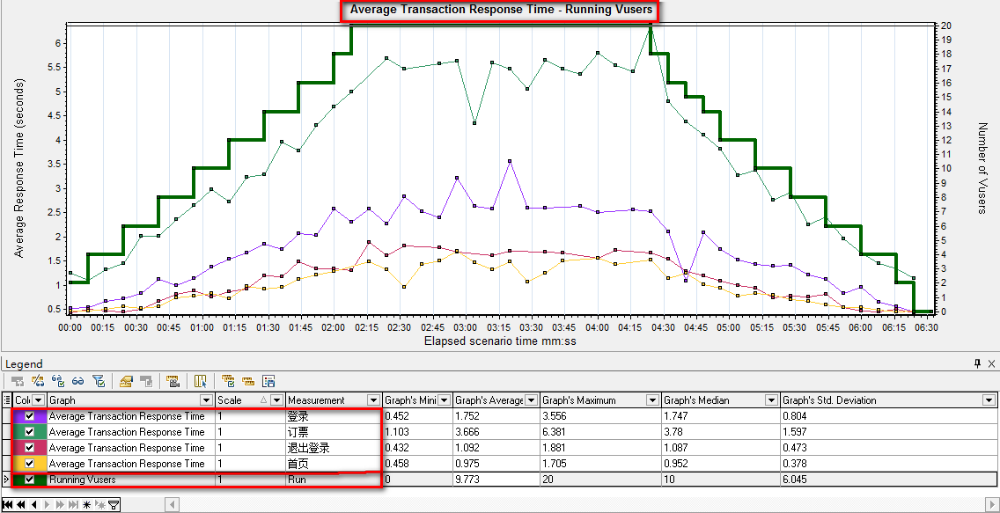
两个图使用相同的X轴，并入的图Y轴合并后在最右侧
2.3 合并方式-Tile(平铺)
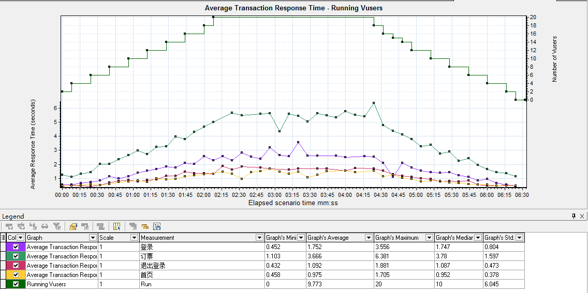
两个图公用一个X轴，Y轴各自保持不变，并入图在上方
2.4 合并方式-Correlate(关联)
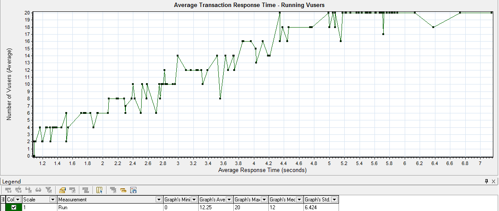
- 主图的Y轴变成合并后的X轴，合并图的Y轴，为合并后的Y轴；
- 合并的时候，需要把多余的线条给过滤掉，如：只留订票业务；
以上图为例，合并后X轴为平均响应时间，Y轴为虚拟用户数。
提示：在实际工作中，除了以上三种合并方式外，瓶颈分析还有一种方法-自动关联
三、自动关联应用
3.1 什么是自动关联？
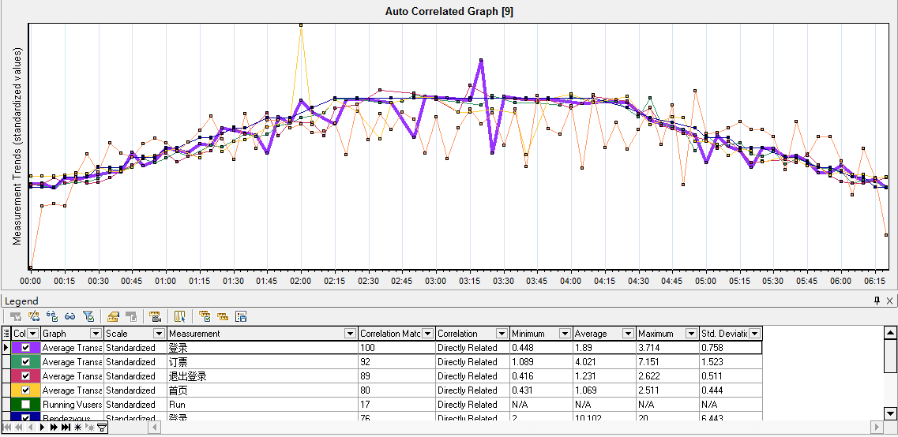
LoadRunner使用统计信息算法去关联相似事务波段的指标，从而来定位某一瓶颈是由那些指标引起的
3.2 自动关联 关联对象-登录事务
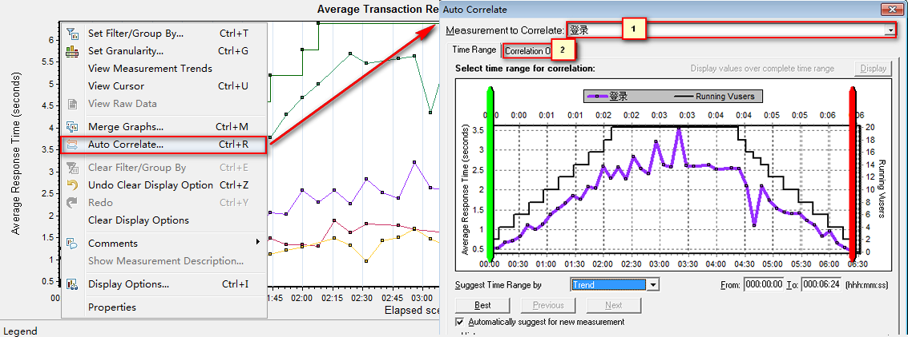
- 可以选择指定关注的时间段；
- 选项设置一般为默认；[Trend(趋势-默认)；Feature(相似)]
3.3 自动关联 指定-匹配的度量指标
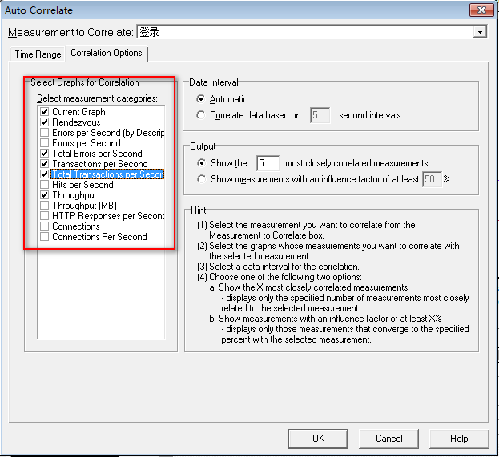
四、常用合并图表组合 说明
- 平均事务响应时间与虚拟运行用户
- 平均事务响应时间与吞吐量
- 每秒点击数与吞吐量
- 每秒点击数与平均事务响应时间
4.1 平均事务响应时间与虚拟运行用户 合并图
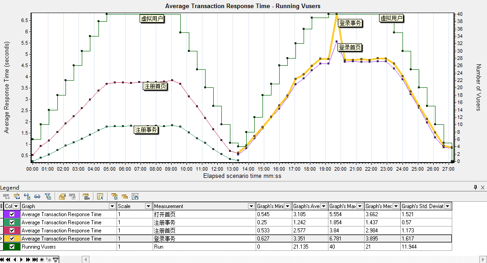
平均事务时间和运行用户图合并能直观体现 虚拟用户数对不同事务的影响
分析：
1. 从上图看出，虚拟用户数对登录事务的影响明显高于注册事务；首先确定一点，应用服务器对40用户并发请求处理是没有问题的。
2. 如果需求登录40并发<=3秒的话，需要进一步结合页面组件细分图及每秒点击率来分析
4.2 平均事务响应时间与吞吐量
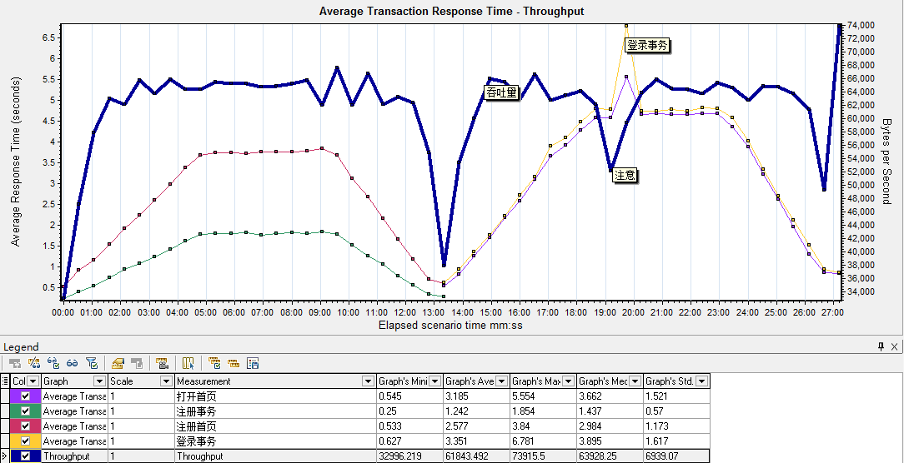
平均事务响应时间与吞吐量结合，可以看出单个事务对吞吐量的影响
分析：
1. 从上图中看出，登录事务响应时间忽然拉长，系统吞吐量直线下降，说明，系统并不是因为总吞吐量的问题导致登录响应延长，基本确定是登录资源或登录业务代码问题；
2. 具体是登录资源还是登录业务，需要结合页面组件细分图和每秒点击数来确定是哪个问题；
4.3 每秒点击数与吞吐量
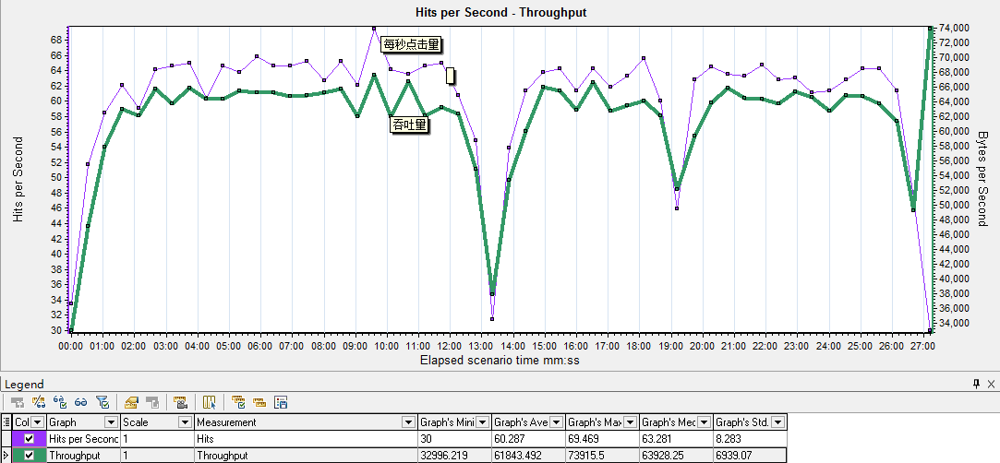
正常情况下每秒点击率与吞吐量图形基本是一致的
分析：
1. 吞吐量不正常那么说明，应用程序响应时间慢
2. 点击量不正常那么说明，网络存在问题，需要检查网络相关报表
提示：一般测试不同配置服务器性能时，这两张图合并最好用
4.4 每秒点击数与平均事务响应时间
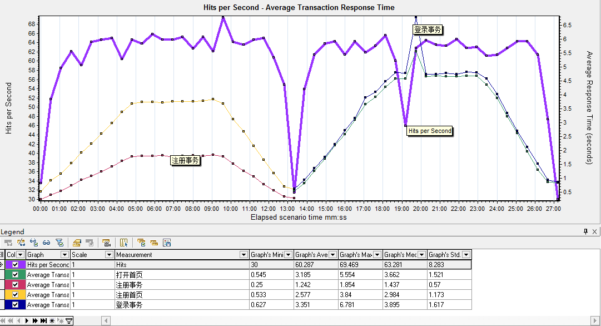
查看每秒点击数对事务的影响
分析：
1. 每秒点击数对注册业务影响很小，注册业务最高每秒点击了69次
2. 每秒点次数对登录业务影响很大，登录业务有请求异常缓慢，需要结合页面组件细分表来确认是那个组件请求